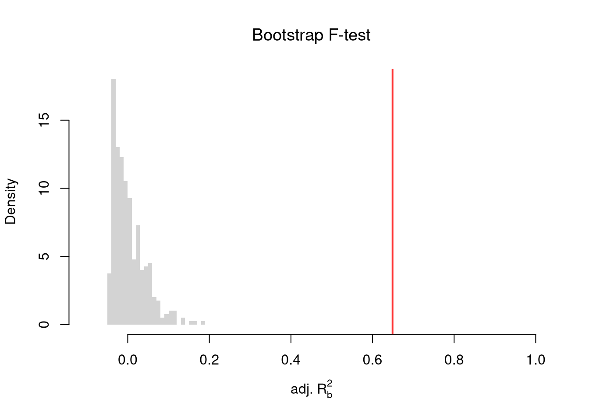
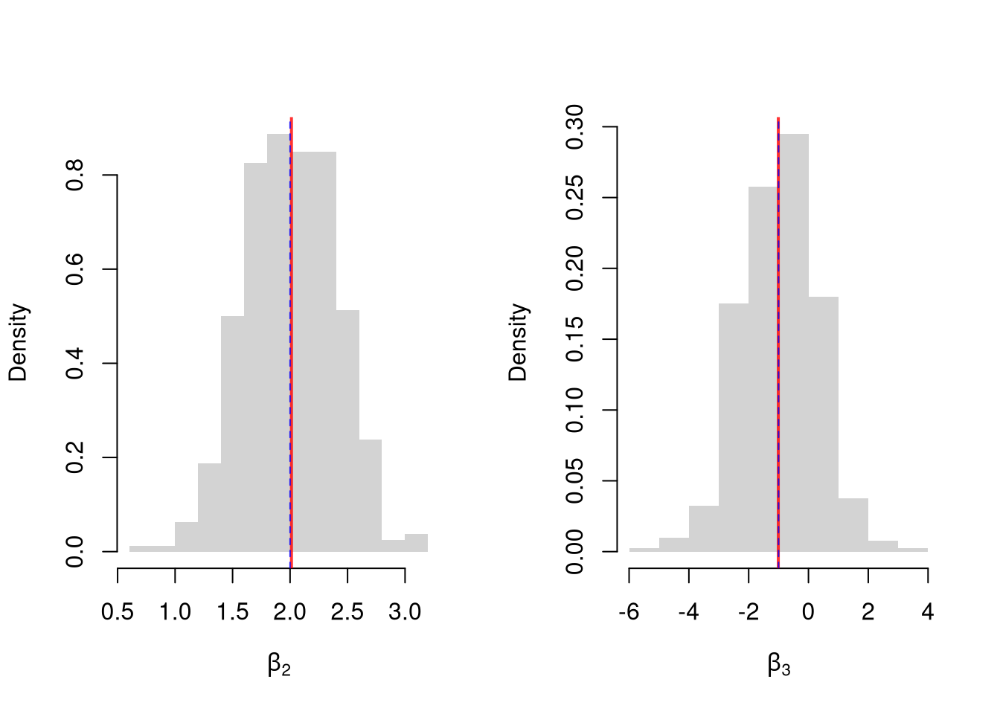
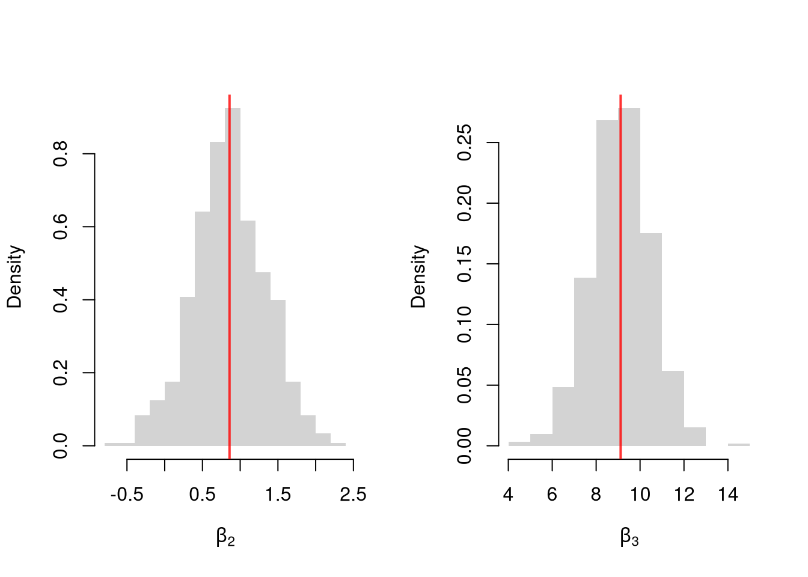

Code
# Fit a multiple regression of Murder on Assault and UrbanPop
reg <- lm(Murder ~ Assault+UrbanPop, data=USArrests)
coef(reg)
## (Intercept) Assault UrbanPop
## 3.20715340 0.04390995 -0.04451047We often want to know the relationship between one outcome variable \(\hat{Y}_{i}\) and multiple explanatory variables. This builds on Simple Regression, which related \(\hat{Y}_{i}\) to a single \(\hat{X}_{i}\). Multiple linear regression fits a single linear model to several explanatory variables at once, and asks how each one moves the outcome while holding the others fixed. For historical reasons, we start by fitting a linear model to data.
With several explanatory variables we need a rule for picking one specific coefficient vector out of the infinite candidates that almost fit the data.
OLS is useful when you want one coefficient per explanatory variable summarizing its partial relationship with \(Y\) holding the others fixed; it is the workhorse of linear modeling because the minimization has a closed-form solution via matrix-calculations (see these notes for a detailed derivation). The solution yields the best fitting coefficient vector \(B^{*}=(b_0^{*} ~~ b_1^{*} ~~... ~~ b_{K}^{*})\), and the residuals \(e_i\) are exactly the sample analog of what is minimized.
# Fit a multiple regression of Murder on Assault and UrbanPop
reg <- lm(Murder ~ Assault+UrbanPop, data=USArrests)
coef(reg)
## (Intercept) Assault UrbanPop
## 3.20715340 0.04390995 -0.04451047To measure how well the model fits the data, we can again plot our predictions.
plot(USArrests$Murder, predict(reg), pch=16, col=grey(0, .5),
main=NA, xlab='Observed Murder', ylab='Predicted Murder')
abline(a=0, b=1, lty=2)
The ordinary coefficient of determination is the share of variance the model explains, \(\hat{R}_{yY}^2 = \frac{\hat{ESS}}{\hat{TSS}}=1-\frac{\hat{RSS}}{\hat{TSS}}\). Adding extra regressors can mechanically raise the ordinary \(\hat{R}^2\) even when the new variables are pure noise, so we need a fit measure that does not reward including junk.
The adjusted \(\hat{R}^2\) is useful for comparing models with different numbers of regressors on the same dataset: it rises when an added variable improves fit by more than random noise would. The penalty \((n-1)/(n-K)\) is the only thing distinguishing it from the unadjusted version, and it can in fact go negative if the model fits worse than a constant.
ksims <- 1:30
for(k in ksims){
USArrests[, paste0('R', k)] <- runif(nrow(USArrests), 0, 20)
}
R2_sim <- rep(NA, length(ksims))
R2adj_sim <- rep(NA, length(ksims))
for(k in ksims){
rvars <- c('Assault', 'UrbanPop', paste0('R', 1:k))
rvars2 <- paste0(rvars, collapse='+')
reg_k <- lm( paste0('Murder ~ ', rvars2), data=USArrests)
R2_sim[k] <- summary(reg_k)$r.squared
R2adj_sim[k] <- summary(reg_k)$adj.r.squared
}
plot.new()
plot.window(xlim=c(0, 30), ylim=c(0, 1))
points(ksims, R2_sim)
points(ksims, R2adj_sim, pch=16)
axis(1)
axis(2)
mtext(expression(R^2), 2, line=3)
mtext('Additional Random Covariates', 1, line=3)
legend('topleft', horiz=TRUE,
legend=c('Unadjusted', 'Adjusted'), pch=c(1, 16))
Above, we computed the coefficient \(\hat{B}\) for a particular sample: \(\hat{X}_{i1}, \hat{X}_{i2}, \ldots, \hat{Y}_{i}\). We now seek to know how much the best-fitting coefficients \(B^{*}\) varies from sample to sample. I.e., \(\hat{B}\) is our estimate and we want to know the standard error of our estimator: \(SE(B^{*})\). To estimate this variability, we can use the same data-driven methods introduced previously.
As before, we can also conduct independent hypothesis tests using t-values. However, we can also conduct joint tests that account for interdependencies in our estimates. For example, to test whether two coefficients both equal \(0\), we bootstrap the joint distribution of coefficients.
# Bootstrap SEs of all three coefficients jointly: resample rows of the
# dataset with replacement, refit lm, and store the coefficient vector.
boot_coefs <- matrix(NA, nrow=399, ncol=3)
for(b in seq(nrow(boot_coefs))){
b_id <- sample( nrow(USArrests), replace=TRUE)
dat_b <- USArrests[b_id, ]
reg_b <- lm(Murder ~ Assault+UrbanPop, data=dat_b)
boot_coefs[b, ] <- coef(reg_b)
}
colnames(boot_coefs) <- names(coef(reg))
# The bootstrap SE is just the standard deviation across replications
apply(boot_coefs, 2, sd)
## (Intercept) Assault UrbanPop
## 1.567551522 0.004562568 0.026242218When coefficient estimates are correlated, testing them one at a time can miss dependencies that a joint test captures.
A joint test is useful when two coefficients move together across resamples: pooling the evidence into one test reflects the actual joint uncertainty, whereas two separate \(t\)-tests would either double-count or miss the dependence entirely. The plot below visualizes the bootstrap joint distribution of the UrbanPop and Assault coefficients, where each point is one bootstrap replicate.
boot_coef_df <- as.data.frame(cbind(
ID=seq(nrow(boot_coefs)),
boot_coefs))
fig <- plotly::plot_ly(boot_coef_df,
type = 'scatter', mode = 'markers',
x = ~ UrbanPop, y = ~ Assault,
text = ~ paste('<b> bootstrap dataset: ', ID, '</b>',
'<br>Coef. UrbanPop :', round(UrbanPop, 3),
'<br>Coef. Assault :', round(Assault, 3),
'<br>Coef. Intercept :', round(`(Intercept)`, 3)),
hoverinfo='text',
showlegend=FALSE,
marker=list( color='rgba(0, 0, 0, 0.5)'))
fig <- plotly::layout(fig,
showlegend=FALSE,
title='Joint Bootstrap Distribution of Coefficients',
xaxis = list(title='UrbanPop Coefficient'),
yaxis = list(title='Assault Coefficient'))
figFor a single coefficient we have the \(t\)-statistic; with several restrictions at once we need an analog that combines them into one number.
The \(F\)-statistic is useful for testing whether several restrictions on a regression hold simultaneously — most often, “are these \(K\) coefficients all zero?” — by comparing two nested models with one number. A large \(\hat{F}\) means the unrestricted model fits much better than the restricted one, beyond what would be expected by chance.
If you test whether all \(K\) variables are jointly significant, the restricted model is a simple intercept and \(\hat{RSS}_{r}=\hat{TSS}\), and \(\hat{F}_{q}\) can be written in terms of \(\hat{R}^2\): \(\hat{F}_{K} = \frac{\hat{R}^2}{1-\hat{R}^2} \frac{n-K}{K-1}\). The first fraction is the relative goodness of fit, and the second fraction is an adjustment for degrees of freedom (similar to how we adjusted the \(\hat{R}^2\) term before). We can also write this test statistic for whether all variables are statistically significant in terms of the adjusted \(\hat{R}^2\): \[\begin{eqnarray} \hat{F}_{K} = \frac{(K-1) + (n-K)\hat{R}^2_{\text{adj.}}}{(K-1)(1 - \hat{R}^2_{\text{adj.}})} \end{eqnarray}\] Notice that \(\hat{F}_{K}=1\) when \(\hat{R}^2_{\text{adj.}}=0\), meaning the model does not improve fit beyond what random covariates would achieve. The F-statistic exceeds \(1\) when \(\hat{R}^2_{\text{adj.}}>0\) and falls below \(1\) when \(\hat{R}^2_{\text{adj.}}<0\).
To conduct a hypothesis test, first compute a null distribution by randomly reshuffling the outcomes and recompute the F statistic, and then compare how often random data give something as extreme as your initial statistic. For some intuition on this F test, examine how the adjusted \(\hat{R}^2\) statistic varies with bootstrap samples.
# Bootstrap under the null
boots <- 1:399
R2adj_sim0 <- rep(NA, length(boots))
for(b in boots){
# Generate bootstrap sample
xy_b <- USArrests
b_id <- sample( nrow(USArrests), replace=TRUE)
# Impose the null
xy_b$Murder <- xy_b$Murder[b_id]
# Run regression
reg_b <- lm(Murder ~ Assault+UrbanPop, data=xy_b)
R2adj_sim0[b] <- summary(reg_b)$adj.r.squared
}
hist(R2adj_sim0, xlim=c(-.1, 1), breaks=25, border=NA,
freq=FALSE, main=NA, xlab=expression('adj.'~R[b]^2))
title('Bootstrap F-test', font.main=1)
# Compare to initial statistic
abline(v=summary(reg)$adj.r.squared, lwd=2, col=rgb(1, 0, 0, .8))
Note that hypothesis testing is not to be done routinely, as additional complications arise when testing multiple hypothesis sequentially.
Under some additional assumptions \(F_{q}\) follows an F-distribution. For more about F-testing, see https://online.stat.psu.edu/stat501/lesson/6/6.2 and https://www.econometrics.blog/post/understanding-the-f-statistic/
Notice that we have gotten pretty far without actually trying to meaningfully interpret regression coefficients. That is because the above procedure will always give us number, regardless as to whether the true data generating process is linear or not. So, to be cautious, we have been interpreting the regression outputs while being agnostic as to how the data are generated. We now consider a special situation where we know the data are generated according to a linear process and are only uncertain about the parameter values.
If the data generating process is truly linear then we have a famous result that lets us attach a simple interpretation of OLS coefficients as unbiased estimates of the effect of \(X\). For example, generate a simulated dataset with \(30\) observations and two exogenous variables. Assume the following relationship: \(Y_{i} = \beta_0 + \beta_1 X_{i1} + \beta_2 X_{i2} + \epsilon_{i}\) where the variables and the error term are realizations of the following data generating processes:
N <- 30
B <- c(10, 2, -1)
x1 <- runif(N, 0, 5)
x2 <- rbinom(N, 1, .7)
X <- cbind(1, x1, x2)
e <- rnorm(N, 0, 3)
Y <- X%*%B + e
dat <- data.frame(Y, X)
coef(lm(Y ~ x1+x2, data=dat))
## (Intercept) x1 x2
## 10.24511 2.68937 -3.94001Simulate the distribution of coefficients under a correctly specified model. Interpret the average.
N <- 30
B <- c(10, 2, -1)
Coefs <- matrix(NA, nrow=3, ncol=400)
for(sim in 1:400){
x1 <- runif(N, 0, 5)
x2 <- rbinom(N, 1, .7)
X <- cbind(1, x1, x2)
e <- rnorm(N, 0, 3)
Y <- X%*%B + e
dat <- data.frame(Y, x1, x2)
Coefs[, sim] <- coef(lm(Y ~ x1+x2, data=dat))
}
par(mfrow=c(1, 2))
for(i in 2:3){
hist(Coefs[i, ], xlab=bquote(beta[.(i)]), main=NA, border=NA, freq=FALSE)
abline(v=mean(Coefs[i, ]), lwd=2, col=rgb(1, 0, 0, .8))
abline(v=B[i], col=rgb(0, 0, 1, .8), lty=2)
}
Many economic phenomena are nonlinear, even when including potential transforms of \(Y\) and \(X\). Sometimes the linear model may still be a good or even great approximation. But sometimes not, and it is hard to know ex-ante. Examine the distribution of coefficients under this mispecified model and try to interpret the average.
N <- 30
Coefs <- matrix(NA, nrow=3, ncol=600)
for(sim in 1:600){
x2 <- runif(N, 0, 5)
x3 <- rbinom(N, 1, .7)
e <- rnorm(N, 0, 3)
Y <- 10*x3 + 2*log(x2)^x3 + e
dat <- data.frame(Y, x2, x3)
Coefs[, sim] <- coef(lm(Y ~ x2+x3, data=dat))
}
par(mfrow=c(1, 2))
for(i in 2:3){
hist(Coefs[i, ], xlab=bquote(beta[.(i)]), main=NA, border=NA, freq=FALSE)
abline(v=mean(Coefs[i, ]), col=rgb(1, 0, 0, .8), lwd=2)
}
In the misspecified case there is no true \(\beta\) for OLS to recover, because the data are not generated by a linear model. The estimated coefficients still have a meaning: OLS returns the linear model that best approximates the true relationship in a least-squares sense. This is why we can still interpret them, cautiously, even when the linear model is wrong.
In general, you can interpret your regression coefficients as adjusted correlations: the partial relationship between \(Y\) and one \(X\) after netting out the linear dependence on the other \(X\)’s. There are (many) tests for whether the relationships in your dataset are actually additively separable and linear (see Model Assessment and Local Relationships).
A small \(\hat{R}^2\) does not mean your coefficients are useless. The two quantities answer different questions: \(\hat{\beta}_{k}\) tells us how \(\hat{Y}\) moves with \(\hat{X}_{k}\), holding other regressors fixed, while \(\hat{R}^2\) tells us how much of the variation in \(\hat{Y}\) the model captures. If most of the variation in \(\hat{Y}\) comes from things outside the model, \(\hat{R}^2\) will be small even when \(\hat{\beta}_{k}\) is precisely estimated. For example, wage regressions on years of schooling often report \(\hat{R}^2\) around \(0.1\), yet the schooling coefficient is one of the most studied quantities in labor economics.
That said, we still care about \(\hat{R}^2\). A very small \(\hat{R}^2\) can signal that the model is misspecified (missing important variables or interactions, nonlinear relationships). In this case, you are not actually estimating a theoretical parameter.1
Comment the script you wrote for this chapter, then restart R and check that it runs from a clean session, then check the script with AI as explained in Working with AI. Write three sentences from memory on the main statistical idea of this chapter, and ask the assistant what is wrong, vague, or missing. Finish with your own questions about whatever you found hardest.
Explain in your own words why \(\hat{R}^2\) can increase when you add a random noise variable to a regression, but \(\hat{R}^2_{\text{adj.}}\) generally does not. What does this imply about using \(\hat{R}^2\) alone to choose between models with different numbers of covariates?
Using the USArrests dataset, regress Murder on Assault, UrbanPop, and Rape. Report the \(\hat{R}^2_{\text{adj.}}\) and the \(F\)-statistic. Then test whether Rape is jointly significant with the other variables by comparing the full model to a restricted model that excludes Rape.
Using lm(), fit the model Murder ~ Assault + UrbanPop on the USArrests data. Write a bootstrap loop (at least 200 replications) to estimate the standard error of the Assault coefficient. Compare your bootstrap standard error to the one reported by summary().
This chapter extended simple regression to multiple explanatory variables, introducing OLS, the adjusted \(\hat{R}^2\), the \(F\)-statistic for joint tests, and bootstrap standard errors. The R² vs. adjusted R² simulation made the difference concrete: we added 30 random covariates to Murder ~ Assault + UrbanPop, watched the unadjusted \(\hat{R}^2\) creep upward, and saw the adjusted version stay flat. In the next chapter we use the same machinery on factor variables — the ANOVA decomposition of variation between and within groups.
Even if the model is correctly specified, we will care about \(R^2\). The unexplained variance affects standard errors, so smaller \(\hat{R}^2\) typically widens confidence intervals. Alternatively, if you want to forecast \(\hat{Y}\), a small \(\hat{R}^2\) means wide prediction intervals.↩︎